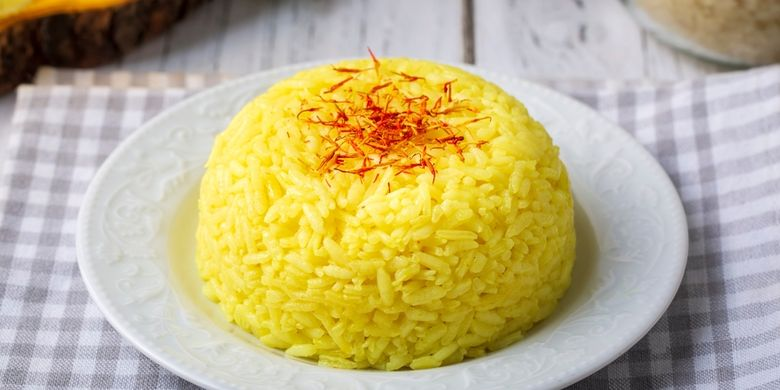

Resep Nasi Kuning
Resep Nasi Kuning

Bahan 2:
- 3 sdm minyak goreng
- 6 siung bawang putih, dicincang
- 2 lembar daun pandan, diikat
- 6 lembar daun jeruk
- 2 batang serai, memarkan
- 2 sdt Desaku Kunyit Bubuk
- 2½ sdt garam
- 1.200 ml santan sedang kentalnya, yang diperoleh dari 1 butir kelapa
Cara Membuat:
- Tumis bawang putih yang sudah dicincang dengan 3 sdm minyak goreng, beri 100 ml santan, tumis hingga kekuningan.
- Masukkan daun pandan, daun jeruk, dan serai. Tumis kembali hingga harum.
- Kecilkan api, masukkan sisa santan dan garam.
- Masukkan Desaku Kunyit Bubuk.
- Masak perlahan hingga santan mulai mendidih serta kunyit bubuk larut dan harum aromanya.
- Masukkan beras ke dalam rebusan bumbu.
- Aduk merata hingga beras menjadi aronan.
- Pindahkan aronan nasi kuning ke dalam kukusan yang sudah dipanaskan.
- Kukus aronan nasi kuning selama 40-45 menit hingga matang dan pulen.
- Hidangkan dengan lauk pauk sesuai selera.
Link video: